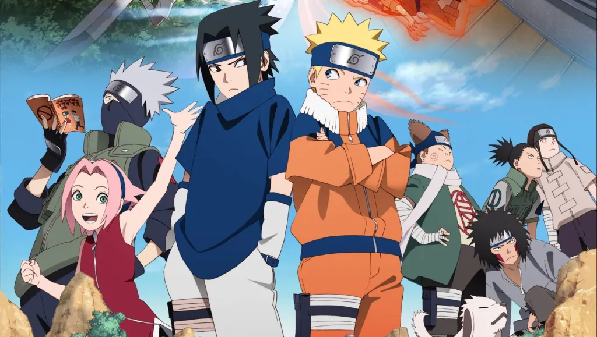

About Naruto
Naruto Uzumaki, a young ninja who seeks recognition from his peers and dreams of becoming the Hokage, the leader of his village.
Naruto and his friends
Naruto's Characteristics
- Super Hyperactive
- Strong-willed
- Cheerful
Naruto's Friends
Naruto Uzumaki is a trouble maker and a prankster but he will fight and defend his friends until the end. Click on the links below to read more about them: